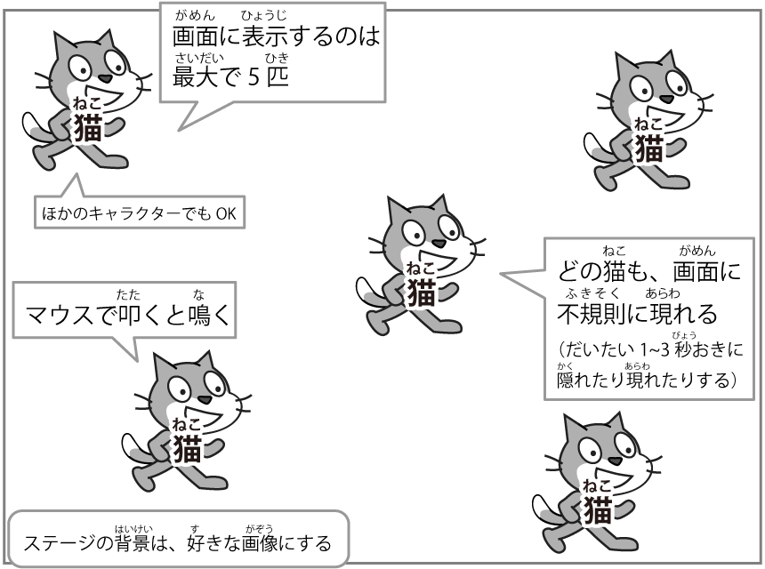

ねこたたきゲーム（つうしょう通称「ねこ猫たた叩き」）

- ねこ猫はがめん画面にふきそく不規則にあらわ現れる
- ねこ猫はたた叩くとな鳴く
- ねこ猫をたた叩いたらとくてん得点が入(はい)る
- とくてん得点は画面(がめん)に表示(ひょうじ)する
- がめん画面にあらわ現れるねこ猫のかず数はごひき5匹にする
おうよう応用へん編（ほか他にもアイデアがおも思いついたらため試してみよう!）
- ねこ猫があらわ現れるばしょ場所を毎回(まいかい)変(か)わるようにしよう
- たた叩くとげんげん減点になるねこ猫とたた叩くとボーナスがつ付くねこ猫をつく作ろう（いろ色やひょうじ表示されるはや早さをか変えるといい）
- さんじゅうびょう30秒でゲームがお終わるようにしよう
やく役にた立ちそうなブロック

ここにあ挙げたブロックは、ほんのいちれい一例です。
ここにはないブロックもいろいろ色々つか使ってため試してみよう！